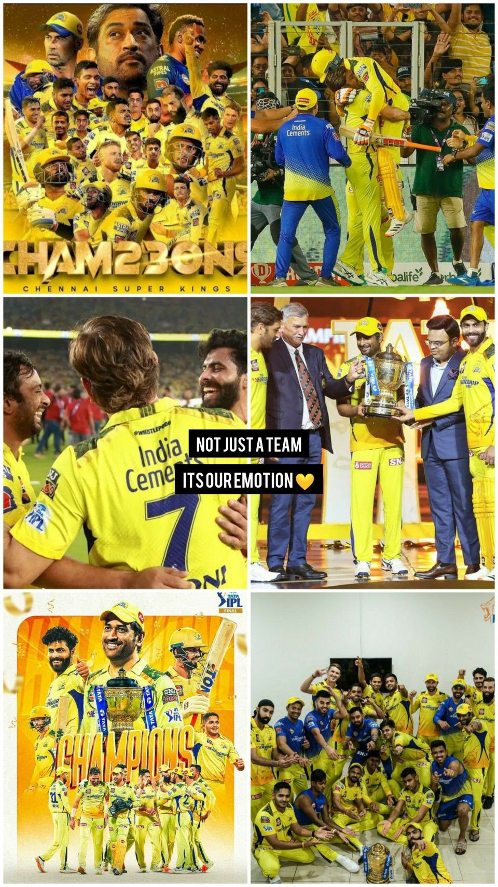

நம்ம சென்னை விஸில் அடிங்க
🉠Whistle Podu Army fans cheering in yellow across Tamil Nadu

📣 Fans holding signs spelling out PODU during CSK matches
🚂 Whistle Podu Express ferrying fans to Chepauk stadium